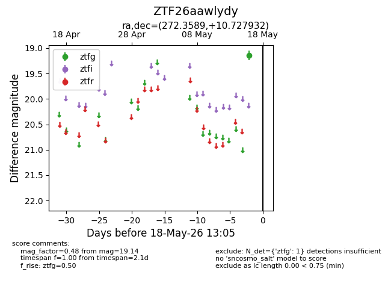
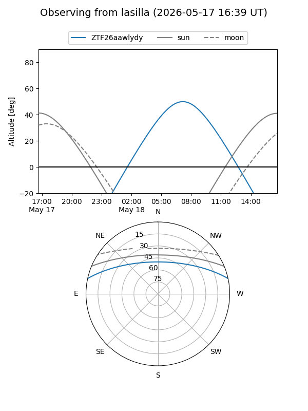
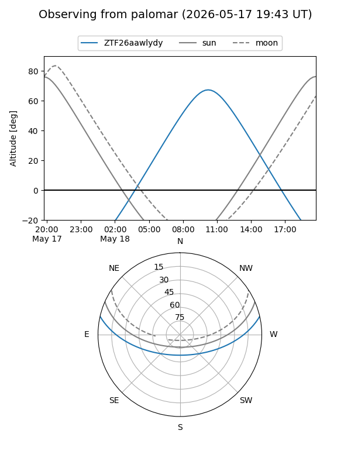

ZTF26aawlydy
Target ZTF26aawlydy at 2026-05-18 13:06
Aliases and brokers:
FINK: link
Lasair: link
ALeRCE: link
alt names
ZTF26aawlydy (ztf,fink_ztf)
Coordinates:
equatorial (ra, dec) = 272.3589,+10.72793
equatorial (HMS+DMS) = 18:09:26.14,+10:43:40.56
galactic (l, b) = (37.9024,+14.13696)
Flags:
Photometry:
last ztfg=19.14
1 ztfg detections
Lightcurve

Visibility


Additional plots